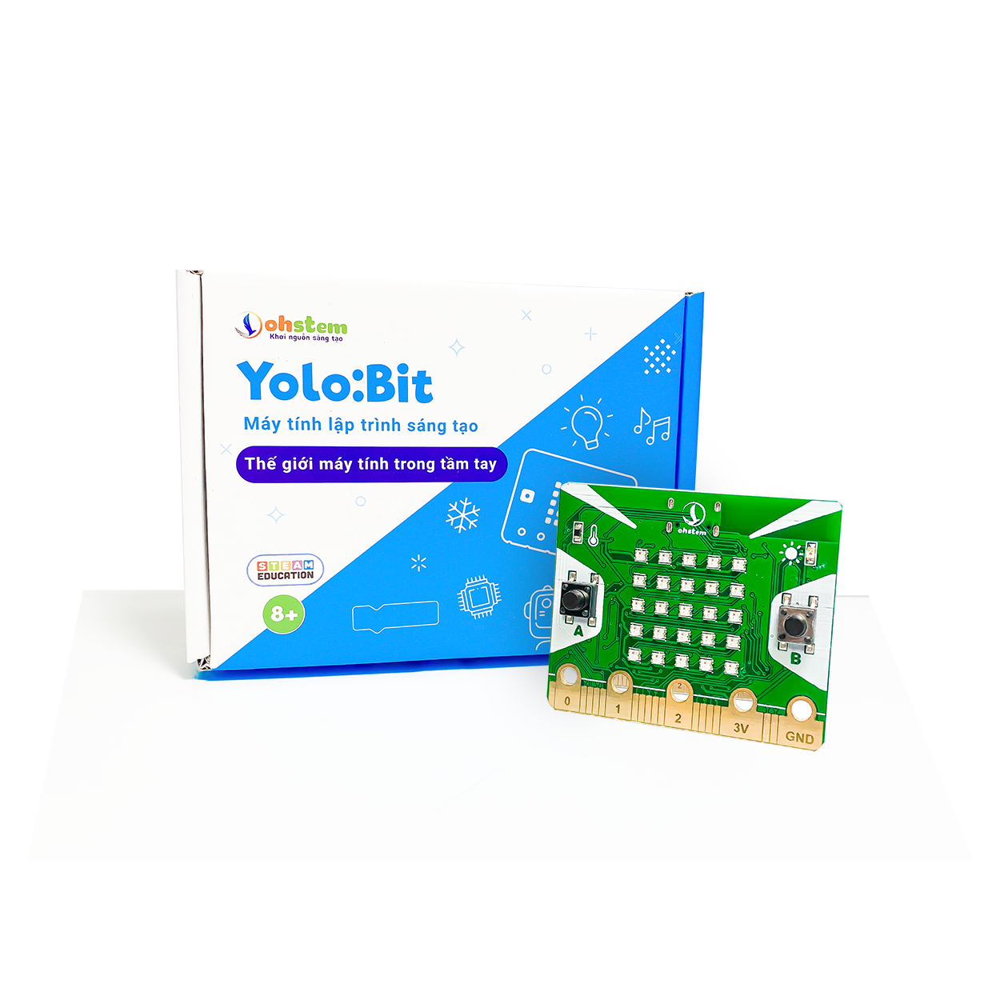

23. Mạch Chuyển Đổi ADC 24bit Loadcell HX711

Mạch Chuyển Đổi ADC 24bit Loadcell HX711 là mạch đọc giá trị cảm biến loadcell với độ phân giải 24bit và chuyển sang giao tiếp 2 dây ( clock và data) để gửi dữ liệu cho mạch điều khiển Yolo:Bit
Thường được ứng dụng làm cân điện tử.
1. Mua sản phẩm

2. Thông số kỹ thuật
Thông số kỹ thuật:
Điện áp hoạt động: 3.3V
Dòng tiêu thụ: <1.5mA
Tốc độ lấy mẫu : 10 - 80 SPS ( tùy chỉnh )
Độ phân giải : 24 bit ADC
Độ phân giải điện áp : 40m
3. Kết nối
Bước 1: Để làm việc với module HX711, bạn cần sử dụng thêm cảm biến cân nặng Loadcell, hãy chuẩn bị các thiết bị như sau:
|  | 
|
|
|
|---|---|---|---|
Máy tính lập trình Yolo:Bit |
Mạch mở rộng cho Yolo:Bit |
Module HX711(kèm dây Grove) |
Cảm biến cân nặng Loadcell (5kg) |
{kind=link}
{kind=link}
Bước 2: Cắm Yolo:Bit vào mạch mở rộng
Bước 3: Kết nối cảm biến cân nặng Loadcell với module HX711 vào các chân như sau:
Dây đỏ - Chân E+
Dây đen - Chân E-
Dây trắng - Chân INA-
Dây xanh - Chân INA+
Bước 4: Kết nối module HX711 vào chân P10/ P13 trên mạch mở rộng
{kind=link}
Kết nối module HX711 với chân có 2 cổng tín hiệu.
4. Hướng dẫn lập trình với OhStem App
Mục tiêu: Viết chương trình hiển thị khối lượng của vật lên màn hình LED Yolo:Bit
Bước 1: Tải thư viện HX711, bằng cách dán đường link sau https://github.com/AITT-VN/yolobit_extension_hx711.git vào phần tìm kiếm thư viện.
Xem hướng dẫn tải thư viện tại đây.

Sau khi tải thư viện thành công, trong danh mục khối lệnh sẽ xuất hiện các khối lệnh tương ứng:

Để làm việc với module LED 7 đoạn bạn cần sử dụng câu lệnh sau để khai báo chân được sử dụng trong chương trình:
{kind=link}
Bước 2: Chúng ta sẽ đặt tỷ lệ của cân tự động.

Tỉ lệ này do bạn cân chỉnh, bạn hãy nhập một số bất kì và điều chỉnh cho đến khi gần bằng khối lượng của vật mà bạn đang cân
Bước 3: Gửi chương trình sau xuống Yolo:Bit

Câu lệnh làm tròn nằm trong phần TÍNH TOÁN
Note
Giải thích chương trình:
Trên màn hình LED Yolo:Bit sẽ hiển thị khối lượng của cân liên tục sau mỗi giây. Vì tỷ lệ cân do chúng ta tự cảnh chỉnh và giá trị cảm biến trả về sẽ luôn thay đổi một lượng nhỏ ở phần thập phân. Vì vậy chúng ta cần làm tròn số trước khi hiển thị thông tin từ cảm biến.
Các câu lệnh trong sự kiện khi nút A được nhấn: sẽ giúp chúng ta đặt giá trị cân về giá trị 0, trước khi bắt đầu cân sản phẩm mới, để hạn chế sự sai lệch trong quá trình cân, và thoát khỏi chế độ chờ hoạt động.
khi nút B được nhấn: Giúp cân dừng hoạt động (tắt cảm biến), chuyển sang chế độ chờ.
5. Hướng dẫn lập trình Arduino
Mở phần mềm Arduino IDE. Xem hướng dẫn lập trình với Arduino tại đây.
Copy đoạn code sau, click vào nút
Verifyđể kiểm tra lỗi chương trình. Sau khi biên dịch không báo lỗi, bạn có thể nạp đoạn code vào board.
#include <HX711.h>
#include "YoloBit.h"
Yolobit yolobit;
// HX711.DOUT – chân #P10
// HX711.PD_SCK – chân #P13
HX711 scale(A1, A0); // Tham số "gain" được bỏ qua; giá trị mặc định là 128 được sử dụng bởi thư viện
void setup()
{
yolobit.serialBegin(115200); // Khởi tạo kết nối Serial với tốc độ baudrate 115200
yolobit.println("Đo lường trọng lượng");
yolobit.println("Trước khi thiết lập cân:");
yolobit.print("Đọc: \t\t");
yolobit.println(scale.read()); // In ra giá trị đọc được từ cảm biến
yolobit.print("Đọc trung bình: \t\t");
yolobit.println(scale.read_average(20)); // In ra giá trị trung bình của 20 giá trị đọc được từ cảm biến
yolobit.print("Giá trị: \t\t");
yolobit.println(scale.get_value(5)); // In ra giá trị trung bình của 5 giá trị đọc được từ cảm biến trừ đi giá trị cân không
yolobit.print("Đơn vị: \t\t");
yolobit.println(scale.get_units(5), 1); // In ra giá trị trung bình của 5 giá trị đọc được từ cảm biến trừ đi giá trị cân không, chia cho tham số SCALE (chưa được thiết lập)
scale.set_scale(2280.f); // Giá trị này được calib cho cảm biến với trọng lượng đã biết. Xem chi tiết trong README.
scale.tare(); // Đặt lại trọng lượng của cân về 0
yolobit.println("Sau khi thiết lập cân:");
yolobit.print("Đọc:\t\t");
yolobit.println(scale.read()); // In ra giá trị đọc được từ cảm biến
yolobit.print("Đọc trung bình:\t\t");
yolobit.println(scale.read_average(20)); // In ra giá trị trung bình của 20 giá trị đọc được từ cảm biến
yolobit.print("Giá trị:\t\t");
yolobit.println(scale.get_value(5)); // In ra giá trị trung bình của 5 giá trị đọc được từ cảm biến trừ đi giá trị cân không
yolobit.print("Đơn vị:\t\t");
yolobit.println(scale.get_units(5), 1); // In ra giá trị trung bình của 5 giá trị đọc được từ cảm biến trừ đi giá trị cân không, chia cho tham số SCALE đã được thiết lập
yolobit.println("Đọc giá trị:");
}
void loop()
{
yolobit.print("Đọc một lần:\t");
yolobit.print(scale.get_units(), 1); // In ra giá trị trọng lượng lần đọc này
yolobit.print("\t| Trung bình:\t");
yolobit.println(scale.get_units(10), 1); // In ra giá trị trung bình của 10 lần đọc
scale.power_down(); // Đưa ADC về trạng thái nghỉ ngơi
yolobit.delay(5000); // Chờ 5 giây
scale.power_up(); // Đưa ADC về trạng thái hoạt động
}